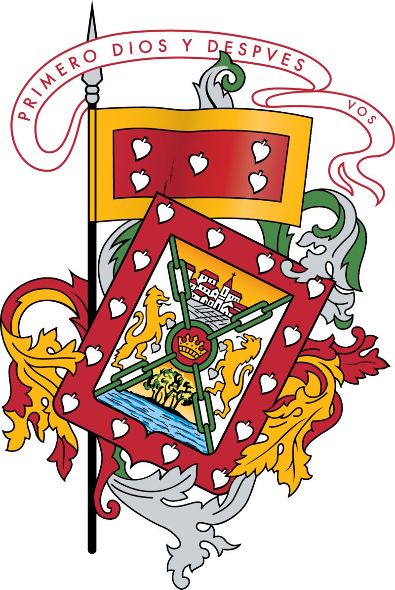
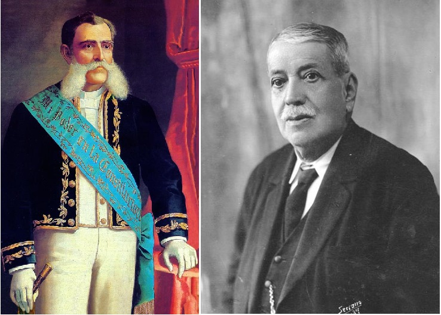

Cuenca es una de las ciudades más importantes y reconocidas
del Ecuador, fundada por Gil Ramírez Dávalos el 12 de abril de 1557,
e independizada el 3 de noviembre de 1820. Cuenta con 15 parroquias urbanas,
con un total de 124 km2 y aproximadamente 400000 habitantes
es una ciudad altamente turística por su diversidad cultural.
Debido a que fue cuna de grandes personajes ilustrados del Ecuador, que
abarcan desde escritores, filosofos, poetas hasta políticos que aportaron
mucho al campo de las artes y las ciencias, ademas de que posee una arquitectura
tradicional, y una historia cultural amplia es llamada la "Atenas del Ecuador".
Símbolos de la ciudad
Bandera
Aunque se sugirió desde 1557 la elaboración de una bandera propia para
la nueva ciudad de Cuenca, no fue sino hasta 1590 donde la petición tomo
más fuerza y se realizaron verdaderamente los preparativos para crearla.
La bandera de Cuenca es sencilla visualmente y esta influenciada por la
bandera de España, consta de solo dos franjas horizontales, una de color
rojo y otra de color dorado.
El rojo simboliza la sangre de derramada por los exploradores españoles
durante la colonización. El dorado, en cambio, simboliza la basta riqueza
de aquellos territorios que fueron conquistados.
Escudo

El escudo de la ciudad fue propuesto por Don Andres Hurtado de Mendoza.
Debido a que el territorio tenia gran semejanza con la ciudad de Cuenca
de España el escudo tuvo gran influencia de las virtudes españolas.
Aunque la mocion fue aprobada y registrada en 1559, a medida de que
pasaron los años el escudo fue sufriendo varias modificaciones para
llegar a lo que es hoy.
Himno

El himno de oficial de la provincia de Azuay es el mismo que el de la
ciudad de Cuenca. Fue compuesta por el Dr. Luis Cordero Crespo (izquierda)
en 1904, junto con la musica de Luis Pauta Rodriguez (derecha).
El himno consta de 6 estrofas de 4 versos cada uno, incluido el coro; aunque
en la version cantada solo se canta el coro, la primera y la tercera estrofa.
En este, se hace referencia a los grandes héroes de la Independencia, asi como
a grandes intelectuales y políticos de aquella época.
A continuación puedes escuchar la versión cantada del himno.